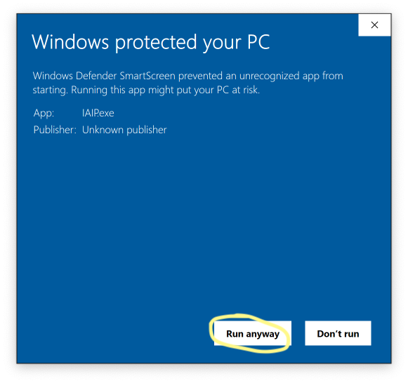
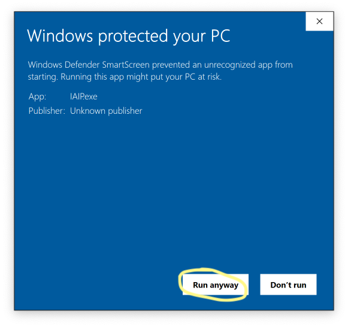

Integrated Air Information Platform
The IAIP was developed by the Georgia EPD to collect and organize data required to operate an efficient air quality program. IAIP development began in 2004 and is ongoing.
Installation
Click the button to download and run the setup file.
Support
For account creation or management, please speak to your supervisor in EPD or Sean Taylor. For general application support or to report a bug, please use the EPD IT Service Desk.
Some additional documentation can be found on the IAIP Documentation site.
Security alert
On Windows 10, you will likely get the following security alert when you install the IAIP. Click the “More info” link, then click the button labeled “Run anyway”.
 

Prerequistes
If this is the first time the IAIP is being installed on your computer, you may also need to install the IAIP prerequisites. This can also prevent some common errors.
Connecting remotely
The IAIP may be used from remote locations (outside of EPD offices) only by connecting through the DNR VPN. Instructions for accessing the VPN are available on the DNR Intranet. For assistance, please use the EPD IT Service Desk
All Air Branch and District employees have a VPN account. Your username and password are the same as the ones you use to log in to your work computer (not the same as your IAIP username/password).
Updates
The IAIP automatically checks for updates when it is run. If an update is available, a notification will be displayed.
What’s New
See the change log.
License
The IAIP is Copyright © Georgia Air Protection Branch. This product is licensed only to employees of the State of Georgia.